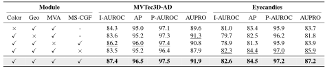

Overview
Current single-modality zero-shot 3D anomaly detection faces limitations. As illustrated in the figure below, 3D-only models miss color and texture defects, while 2D-only models overlook structural damages, highlighting a strong visual complementarity between modalities.
To overcome this unimodal perception blind spot, this paper proposes a unified framework named CoGeoAD. By effectively synergizing color and geometric representations across multiple views, this framework can accurately capture and localize two distinct types of anomalies—texture and structure—within a single model.
This deep color and geometry fusion strategy significantly outperforms traditional unimodal baseline methods and simple feature concatenation schemes in detection performance.

Framework
As illustrated in figure, CoGeoAD is a zero-shot framework designed to bridge the domain gap by synergizing 2D semantic priors with 3D geometric representations. The pipeline comprises three integral modules: (1) Color-Geometric Multi-View Point Cloud Render, which establishes pixel-wise correspondences between RGB images and point clouds to generate chromatic and geometric views. (2) Data-Driven Multi-View Attention (MVA), which utilizes a lightweight CNN-based Pixel Encoder to dynamically compute attention scores from multi-view images, ensuring that informative viewpoints are prioritized; and (3) Multi-Stage CoGeo Fusion (MS-CGF), which hierarchically aggregates multi-level features and computes text-image similarities to generate anomaly maps.

Key Modules
Step 1: Color-Geometric Multi-View Point Cloud Render
This foundational preprocessing module bridges the gap between 2D anomaly detection and the 3D domain. It explicitly decouples geometry from color by rendering point clouds into paired multi-view images—one capturing geometric structures and the other capturing chromatic textures.
The framework generates multi-view representations by rotating the point cloud, utilizing a composite rotation matrix:
To establish precise point-to-pixel correspondences and filter out occluded noise, so it applies a geometric consistency check using a visibility indicator for points:
Step 2: Data-Driven Multi-View Attention (MVA)
The MVA module dynamically calculates importance scores for each rendered 2D view, prioritizing informative perspectives to prevent subtle anomaly cues from being overshadowed by irrelevant background views.
A lightweight CNN-based pixel encoder extracts and maps spatial features into a latent embedding:
To adaptively weigh the contribution of each view, we employ a data-driven attention mechanism parameterized by a scoring network. To prevent the attention mechanism from trivially collapsing onto a single view, an entropy loss term is applied during training to encourage distributional smoothness:

Step 3: Multi-Stage Color-Geometric Fusion (MS-CGF)
The MS-CGF module hierarchically aggregates multi-level features across four distinct dimensions: feature depth, semantic similarity, view, and modality. To capture fine-grained details, intermediate CLIP layers are grouped and dynamically fused using an MLP-based selector:
Anomaly detection is performed at each semantic depth independently by computing the cosine similarity between the fused feature map and the text embedding:
Ultimately, the parallel geometric and color streams are fused using an element-wise maximization strategy to generate the final point cloud anomaly score, ensuring high sensitivity to both structural and textural defects:
Performance

Quantitative comparison with state-of-the-art methods on MVTec3D-AD and Eyecandies datasets. We include recent unsupervised multimodal methods such as BridgeNet as reference upper bounds, and recent zero-shot CLIP-based methods such as GS-CLIP for direct comparison.

Ablation study on key components of CoGeoAD on MVTec3D-AD and Eyecandies datasets.
